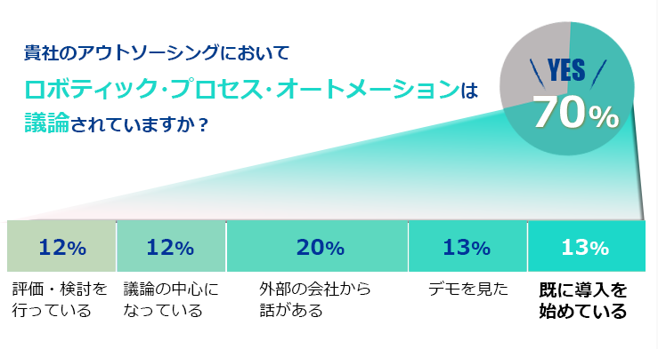

WinActorとは
- RPAとはルールエンジン・機械学習・人工知能などを活用し、ホワイトカラー業務を効率化・自動化する仕組みのことで、 仮想知的労働者(Digital Labor)とも呼ばれています。人間のみが対応可能と想定されていた作業、もしくはそれより高度な作業を人間に代わって実施できます。欧米では既にAIを活用したRPAソリューションが導入されています。日本でも導入する企業が増えつつあります。

自動化の利用シーン例
- WinActorは、PC上でのDB入力 ・修正作業から受発注業務における各種投入作業、さらにはデータ変換作業などを記録・シナリオ化することにより、 繰り返しの入力作業を自動化し、作業時間の短縮・ 入力ミスの軽減を実現します。
- エアコン工事にともなう作業指示書の自動作成例
- お客様リストのデータから工事希望日を読み込み、顧客管理システムのデータベースから検索した住所、電話番号などを自動転記します。
さらにWeb上の地図を利用し、該当する地域周辺の地図画像の読み込み、および指示書への貼り付けなども自動化できます。
- ダイレクトメールの宛名書き自動作成例（購入履歴からの顧客絞り込み機能等を活用）
- 宛名書きソフトウェア※を使い、セールやキャンペーン情報などをお客様に知らせる郵送用ダイレクトメールの登録・作成作業を自動化します。
たとえば過去の購入履歴から一定額以上のお客様のみを絞り込むこともできるため、膨大な顧客数でも迅速できめの細かいCRM対応が可能になります。
もちろんその他にも、見積書・請求書作成等のPCを使った事務処理作業を大幅に効率化できます。
WinActorの特長
- シナリオ作成や編集は開発スキルがなくても、ビジュアルエディタによるGUI操作により複雑な業務フローを記録・編集可能です。
- 登録した画像を対照アプリの画面から探し出し操作を行います。
- 画像で認識させるため、様々なアプリに対応できます。
- WinActorが作成する「シナリオ」では、Excelに書かれているデータを変数に取得したり、
変数の値を参照して条件分岐をさせることもできます。
- キーボードの入力、マウスのクリック、待機時間の設定クリップボードを活用したコピー&ペーストなど、
人が行うほとんどの操作に対応可能です。